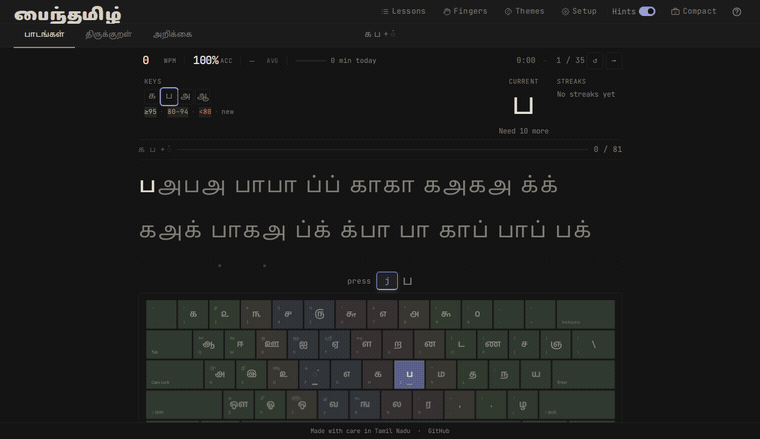

0 / 0
click to type
பைந்தமிழ் தமிழ்99 விசைப்பலகை தட்டச்சு கற்றுத்தரும் தளம். இது உண்மையான விசைப்பலகையின் விசை அமைவிடங்களை — நடுவரிசை, விரல் நிலைகள், தட்டச்சு வேகம் — பயிற்றுவிக்கிறது.
திரைத் தொடு விசைப்பலகையில் நிலையான விசை இடங்கள் இல்லை. எனவே இந்தப் பாடங்களைக் கைபேசியில் பயன்படுத்த இயலாது.

Payinthamil needs a physical keyboard. It teaches the Tamil99 layout — home row, finger placement and typing speed — which a touchscreen keyboard can't reproduce. Please open this on a desktop or laptop.